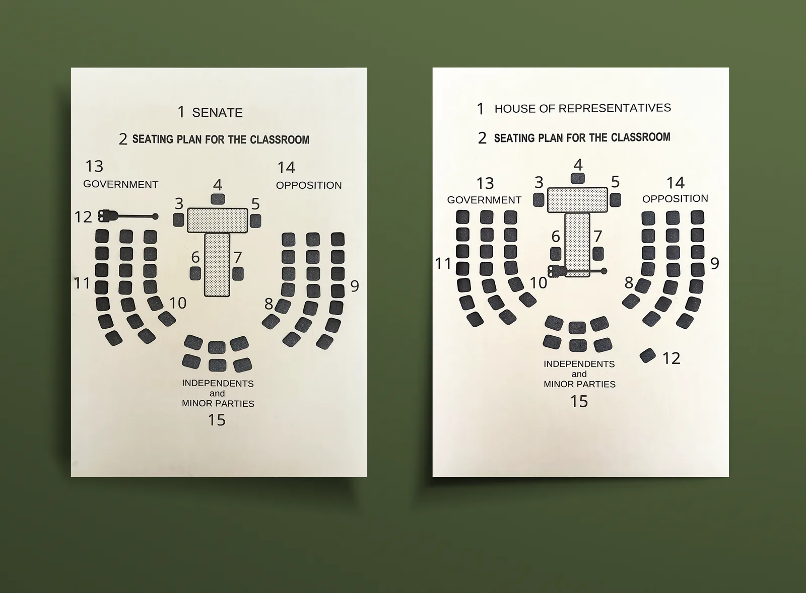

House of Representatives & Senate — Tactile Maps
Tactile chamber maps commissioned by the Parliamentary Education Office to give vision-impaired visitors an accurate, hands-on understanding of how the House of Representatives and Senate are laid out.

The challenge
The existing chamber diagrams relied entirely on colour, dense detail, and visual hierarchy — none of which translates to a reader who can't see them. The brief was to rebuild that information so it could be read with fingertips, without losing the spatial truth of the rooms.
Designing for touch instead of sight rewrote almost every assumption:
- Stripping the original layouts back to the elements that actually carry meaning — and finding tactile equivalents for each.
- Learning what the PIF (Print in a Flash) machine can and can't reproduce, so the design wouldn't outrun the production method.
- Holding the maps to a real accessibility standard, not a sighted designer's idea of one.
My approach
Three pillars carried the work — research into how tactile maps are read, design that prioritised contrast between textures, and production that respected the constraints of the PIF machine.
Research
- Studied existing tactile mapping conventions and what readers expect under the hand.
- Audited the original chamber diagrams for elements that were carrying real spatial meaning vs. visual decoration.
- Reviewed braille labelling standards so numbering would feel consistent across both maps.
Design
- Reduced each chamber to high-contrast, block-and-stipple elements — solid for benches, stippled for tables.
- Defined a tactile element hierarchy so the most important features read first under the fingertip.
- Tested layouts with the braille numbering system to make sure labels never collided with shapes.
Production
- Produced the final maps on PIF machines, working within the texture range the process can reliably reproduce.
- Iterated on the swell-paper output until the textures felt distinct, not just present.
- Delivered both chamber maps as a paired set for the Parliamentary Education Office.
What I developed
- Two paired tactile chamber maps — House of Representatives and Senate, produced on swell paper for use by vision-impaired visitors.
- A tactile design language — solid raised blocks, fine stippling, and clean negative space combined into a contrast system that's readable by touch.
- Integrated braille labelling — a numbered key so visitors can connect each element under their fingertips to a written reference.